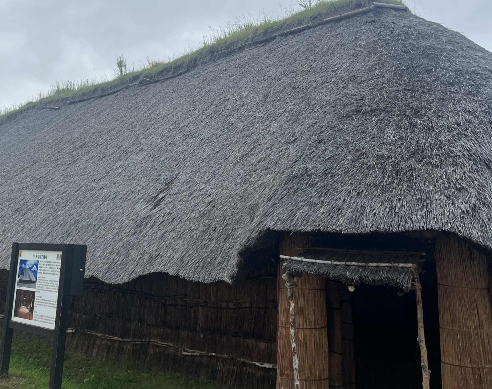

～青森県&岩手県&秋田県&山形県～
2024年8月10日から18日に東北4県を旅行した記事になります！
▶ 今回の旅の目次
蕪島神社
らぷらざ亭
イサバのかっちゃの店 肴町のらぷらざ亭
営業時間：17:00～23:30
定休日：なし
予約可否：予約可
駐車場：なし
TEL：0178-72-5587
住所：青森県八戸市大字六日町13 なかやビル１Ｆ
URL： 食べログで見る
浜寿司
浜寿司
営業時間：11:00～14:00 17:00～21:00(月・火・水・木・金・土)
11:00～14:00(日)定休日：不定休
予約可否：予約可
駐車場：あり
TEL：0175-37-2739
住所：青森県下北郡大間町大字大間字大間69-3
URL： 食べログで見る
善知鳥神社
三内丸山遺跡

三内丸山遺跡
営業時間：10月1日～5月30日 9:00～17:00
GW中と6月1日～9月30日 9:00～18:00定休日：第4月曜日(祝日の場合は翌日)、12月30日～1月1日
駐車場：あり
住所：青森県青森市大字三内字丸山305
URL： 三内丸山遺跡公式サイト
弘前城
弘前城
営業時間：4月1日～11月23日 9:00～17:00
弘前さくらまつり期間 9:00～21:00定休日：11月24日～3月31日
駐車場：なし
住所：青森県弘前市下白銀町1
URL： 弘前公園公式サイト
青森縣護國神社
尾形精肉店(ミートプラザ尾形)
幽玄洞
幽玄洞
営業時間：4月～9月 8:30～18:00
10月～11月 8:30～17:00
12月～3月 9:00～16:00定休日：
駐車場：あり
住所：岩手県一関市東山町長坂字東本町154-1
URL： 幽玄洞公式サイト
十六家
十六家
営業時間：11:00～14:00 17:00～20:00(月・火・木・金・土)
11:00～14:00(日)定休日：水・祝日
予約可否：予約可
駐車場：あり
TEL：019-613-6025
住所：岩手県滝沢市牧野林1048-7
URL： 食べログで見る
石神の丘美術館
石神の丘美術館
営業時間：9:00～17:00
定休日：月曜日(祝日の場合は翌日)、12月29月～1月3日
駐車場：あり
住所：岩手県岩手郡岩手町大字五日市10-121-21
URL： 食べログで見る
宮沢賢治記念館
花巻新渡戸記念館
安野稲荷
香月
鉄板焼き 香月(こうげつ)
営業時間：11:30～14:00 17:00～1:00
定休日：日曜日
予約可否：予約可
駐車場：あり
TEL：019-654-6775
住所：岩手県盛岡市菜園1-5-10 グリムハウス 4F
URL： 食べログで見る
滝観洞
滝観洞(ろうかんどう)
営業時間：3月～10月 8:30～16:30
11月～2月 8:30～16:00定休日：不定休
駐車場：あり
住所：岩手県気仙郡住田町上有住土倉298-81
URL： 滝観洞公式サイト
遠野食肉センター
遠野食肉センター 遠野本店
営業時間：11:00～21:00
定休日：月曜日
予約可否：予約可
駐車場：あり
TEL：0198-62-2242
住所：岩手県遠野市松崎町白岩20-13-1
URL： 食べログで見る
盛岡八幡宮
岩手護國神社
三ツ石神社

三ツ石神社
営業時間：24時間
定休日：なし
駐車場：あり
住所：岩手県盛岡市名須川町2-1
吉兆寿司
吉兆寿司(きっちょうずし)
営業時間：11:00～23:00(月・火・水・金・土)
11:00～22:00(日・祝)定休日：木曜日
予約可否：予約可
駐車場：あり
TEL：0197-56-5906
住所：岩手県奥州市前沢区字塔ケ崎21-7
URL： 食べログで見る
真山神社
なまはげ館
千秋公園
千秋公園
営業時間：24時間
駐車場：あり 普通車：30分100円
住所：
彌高神社
旧池田氏庭園
旧池田氏庭園
営業時間：9:00～16:00
定休日：月曜日(祝日の場合は翌日)
駐車場：あり
住所：秋田県大仙市高梨大島
唐松神社
営業時間：24時間
定休日：なし
駐車場：あり
住所：秋田県大仙市協和境字下台84
郷土料理 味治
郷土料理 味治(みはる)
営業時間：17:00～23:00
定休日：日曜日
予約可否：予約可
駐車場：なし
TEL：018-864-5972
住所：秋田県秋田市大町5-2-7
URL： 食べログで見る
玉簾の滝
玉簾の滝
営業時間：24時間
定休日：なし
駐車場：あり
住所：山形県酒田市升田字大森
本間美術館
みなと市場
みなと市場
営業時間：9:00～18:00(店舗によって異なります)
定休日：水曜日、1月1日
駐車場：あり
住所：山形県酒田市船場町2-5-56
旧青山本邸
旧青山本邸
営業時間：4月～11日 9:30～16:30
12月～3月 10:00～16:00定休日：月曜日(祝日の場合は翌日)、12月29日～1月3日
駐車場：あり
住所：山形県飽海郡遊佐町比子字青塚155
最上亭
最上亭(もがみてい)
営業時間：6:30～9:30 11;30～14:00 17:00～21:00
定休日：
予約可否：
駐車場：
TEL：050-5593-5918
住所：山形県山形市香澄町1-1-1 ホテルメトロポリタン山形 2F
URL： 食べログで見る
平田牧場 とんや 酒田店
平田牧場 とんや 酒田店
営業時間：11:00～15:00
17:00～20:30定休日：年末年始
予約可否：予約可
駐車場：あり
TEL：050-5872-4427
住所：山形県酒田市みずほ2-17-8 ガーデンパレスみずほ 1F
URL： 食べログで見る
酒田市美術館
八雲神社
八雲神社
営業時間：9:00～17:00
定休日：なし
駐車場：あり
住所：山形県酒田市御成町2-48
上杉神社
火輝 極
熟成焼肉 火輝(かき) 極
営業時間：17:30～24:00
定休日：木曜日
予約可否：予約可
駐車場：なし
TEL：023-674-7677
住所：山形県山形市香澄町2-5-3
URL： 食べログで見る
走行距離